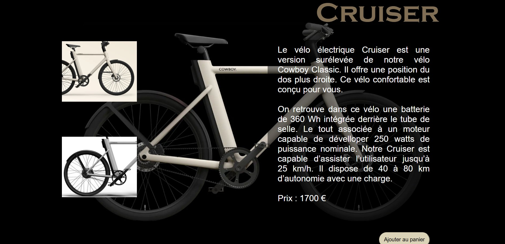
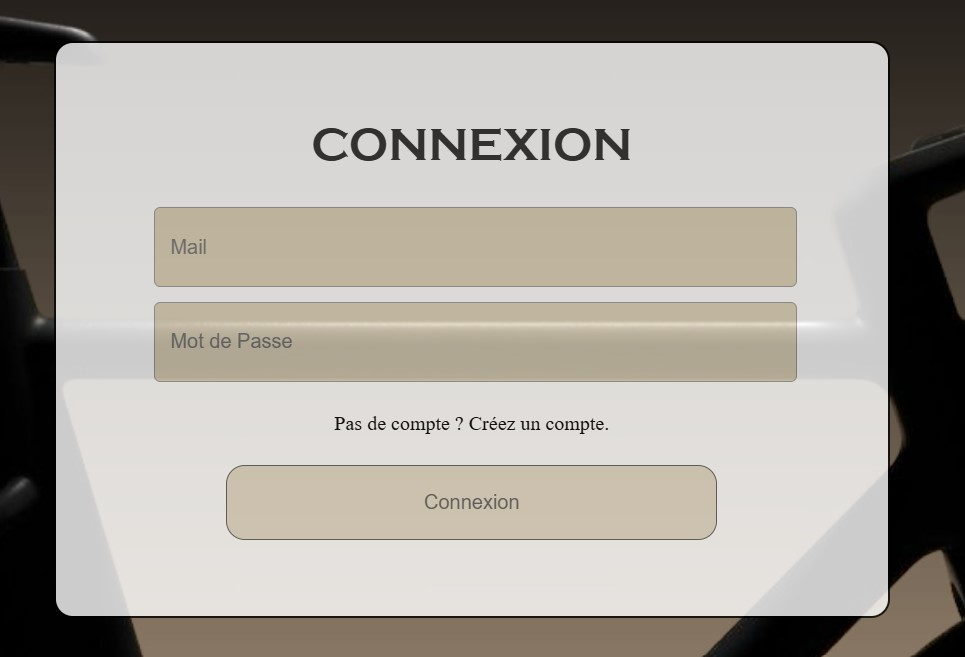
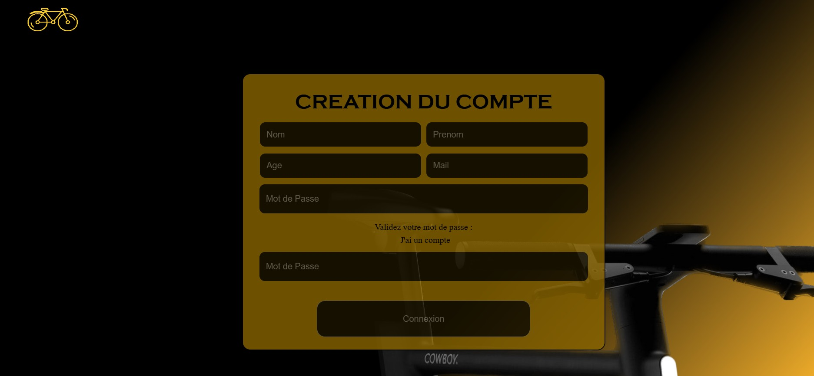

Description du projet
Le site marchand "Cowboy" est un projet que j'ai réalisé en première
année de BTS SIO. Le thême des vélos électriques m'a été donné par mes
professeures alors, en binôme avec une camarade de classe, nous avons
eu pour mission de trouver une marque de vélos électriques à promouvoir
sur un site que l'ont créerait dans son entièreté.
Nous nous sommes donc réparti le travail et sommes également passées par la réalisation d'un cahier des charges. Ainsi, nos professeures pouvaient y voir plus clair sur nos objectif. Ensuite, le travail en binôme s'est transformé en un travail individuel afin que nos compétences informatiques personnelles ressortent d'avantage.
Au départ, le site était un site vitrine, sans base de données. En m'impregnant du langage PHP, ainsi que du langage SQL, j'ai eu pour devoir d'ajouter une base de donnée à mon site marchand, pour qu'il soit enfin fonctionnel.
Nous nous sommes donc réparti le travail et sommes également passées par la réalisation d'un cahier des charges. Ainsi, nos professeures pouvaient y voir plus clair sur nos objectif. Ensuite, le travail en binôme s'est transformé en un travail individuel afin que nos compétences informatiques personnelles ressortent d'avantage.
Au départ, le site était un site vitrine, sans base de données. En m'impregnant du langage PHP, ainsi que du langage SQL, j'ai eu pour devoir d'ajouter une base de donnée à mon site marchand, pour qu'il soit enfin fonctionnel.
Bilan et autocritique
Au départ, j'avais une mauvaise compréhension des liaisons entre la base de données et l'application en php donc j'ai rencotré des difficultés pour afficher les informations
à partir de la base de données. J'aurai dû poser plus de questions à mes professeures. Toutefois, ce site était une bonne maniière d'approcher le développement avec les langages
html, php, css et javascript.